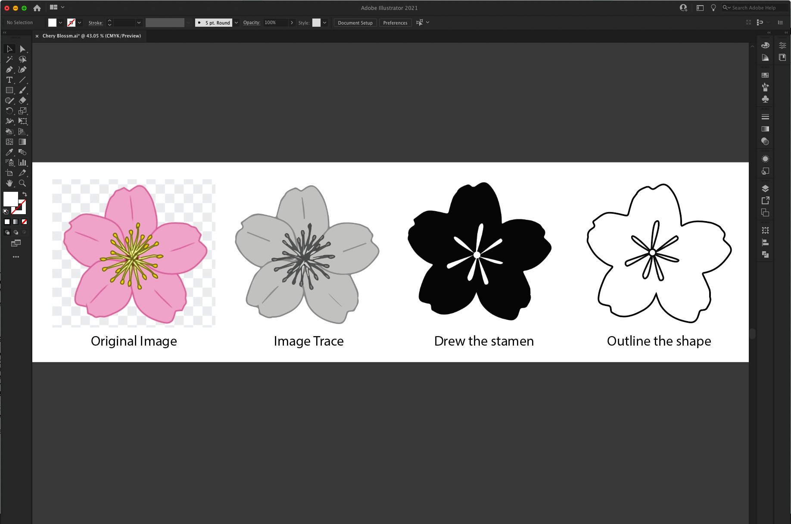

Cherry Flower
Image Preparation:
Challenges: The stamen in the middle was a bit complex in the original image, and does not turn into victor nicely, so I abandoned the original stamen, and used pen tool to drew some freehand stamen. I wanted to follow the nature feeling, so I made it asymmetrical.